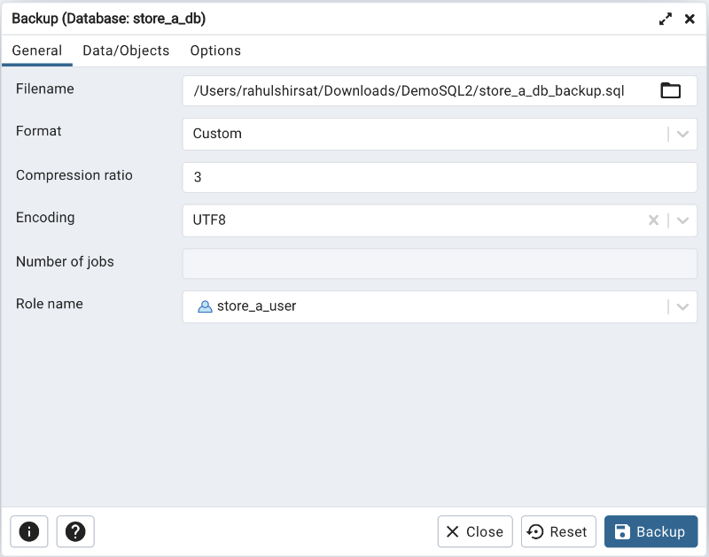
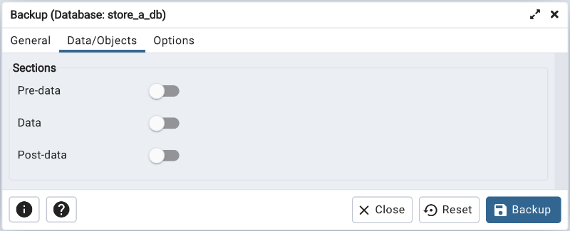
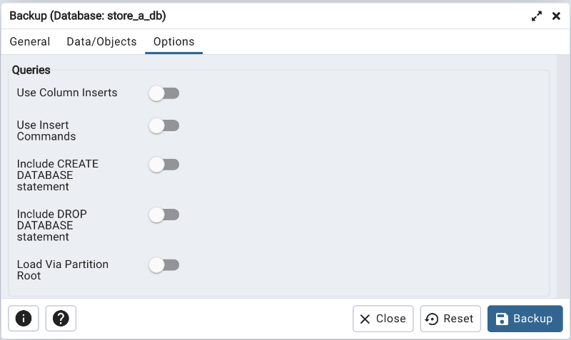

Backup Dialog¶
pgAdmin uses the pg_dump utility to provide an easy way to create a backup in a plain-text or archived format. You can then use a client application (like psql or the Query Tool) to restore a plain-text backup file, or use the Postgres pg_restore utility to restore an archived backup. The pg_dump utility must have read access to all database objects that you want to back up.
You can backup a single table, a schema, or a complete database. Select the name of the backup source in the pgAdmin tree control, right click to open the context menu, and select Backup… to open the Backup dialog. The name of the object selected will appear in the dialog title bar.
Use the fields in the General tab to specify parameters for the backup:
Enter the name of the backup file in the Filename field. Optionally, select the Browser icon (…) to the right to navigate into a directory and select a file that will contain the archive.
Use the drop-down listbox in the Format field to select the format that is best suited for your application. Each format has advantages and disadvantages:
Select Custom to create a custom archive file that you can use with pg_restore to create a copy of a database. Custom archive file formats must be restored with pg_restore. This format offers the opportunity to select which database objects to restore from the backup file. Custom archive format is recommended for medium to large databases as it is compressed by default.
Select Tar to generate a tar archive file that you can restore with pg_restore. The tar format does not support compression.
Select Plain to create a plain-text script file. A plain-text script file contains SQL statements and commands that you can execute at the psql command line to recreate the database objects and load the table data. A plain-text backup file can be edited in a text editor, if desired, before using the psql program to restore database objects. Plain format is normally recommended for smaller databases; script dumps are not recommended for blobs. The SQL commands within the script will reconstruct the database to the last saved state of the database. A plain-text script can be used to reconstruct the database on another machine, or (with modifications) on other architectures.
Select Directory to generate a directory-format archive suitable for use with pg_restore. This file format creates a directory with one file for each table and blob being dumped, plus a Table of Contents file describing the dumped objects in a machine-readable format that pg_restore can read. This format is compressed by default.
Use the Compression Ratio field to select a compression level for the backup. Specify a value of zero to mean use no compression; specify a maximum compression value of 9. Please note that tar archives do not support compression.
Use the Encoding drop-down listbox to select the character encoding method that should be used for the archive.
Use the Number of Jobs field (when applicable) to specify the number of tables that will be dumped simultaneously in a parallel backup.
Use the dropdown listbox next to Rolename to specify the role that owns the backup.
Click the Data/Objects tab to continue. Use the fields in the Data/Objects tab to provide options related to data or pgAdmin objects that correspond to pg_dump.
Move switches in the Sections field box to select a portion of the object that will be backed up.
Move the switch next to Pre-data towards right position to include all data definition items not included in the data or post-data item lists.
Move the switch next to Data towards right position to backup actual table data, large-object contents, and sequence values.
Move the switch next to Post-data towards right position to include definitions of indexes, triggers, rules, and constraints other than validated check constraints.
Move switches in the Type of objects field box to specify details about the type of objects that will be backed up.
Move the switch next to Only data towards right position to limit the back up to data.
Move the switch next to Only schema to limit the back up to schema-level database objects.
Move the switch next to Blobs towards left position to exclude large objects in the backup.
Move switches in the Do not save field box to select the objects that will not be included in the backup.
Move the switch next to Owner towards right position to exclude commands that set object ownership.
Move the switch next to Privilege towards right position to exclude commands that create access privileges.
Move the switch next to Tablespace towards right position to exclude tablespaces.
Move the switch next to Unlogged table data towards right position to exclude the contents of unlogged tables.
Move the switch next to Comments towards right position to exclude commands that set the comments. Note: This option is visible only for database server greater than or equal to 11.
Click the Options tab to continue. Use these additional fields to specify options like including ddl statements, verbose message or using set session authorization corresponding to pg_dump options.
Move switches in the Queries field box to specify the type of statements that should be included in the backup.
Move the switch next to Use Column Inserts towards right position to dump the data in the form of INSERT statements and include explicit column names. Please note: this may make restoration from backup slow.
Move the switch next to Use Insert commands towards right position to dump the data in the form of INSERT statements rather than using a COPY command. Please note: this may make restoration from backup slow.
Move the switch next to Include CREATE DATABASE statement towards right position to include a command in the backup that creates a new database when restoring the backup.
Move the switch next to Include DROP DATABASE statement towards right position to include a command in the backup that will drop any existing database object with the same name before recreating the object during a backup.
Move the switch next to Load Via Partition Root towards right position, so when dumping a COPY or INSERT statement for a partitioned table, target the root of the partitioning hierarchy which contains it rather than the partition itself. Note: This option is visible only for database server greater than or equal to 11.
Move switches in the Disable field box to specify the type of statements that should be excluded from the backup.
Move the switch next to Trigger (active when creating a data-only backup) towards right position to include commands that will disable triggers on the target table while the data is being loaded.
Move the switch next to $ quoting towards right position to enable dollar quoting within function bodies; if disabled, the function body will be quoted using SQL standard string syntax.
Move switches in the Miscellaneous field box to specify miscellaneous backup options.
Move the switch next to With OIDs towards right position to include object identifiers as part of the table data for each table.
Move the switch next to Verbose messages towards left position to instruct pg_dump to exclude verbose messages.
Move the switch next to Force double quotes on identifiers towards right position to force the quoting of all identifiers.
Move the switch next to Use SET SESSION AUTHORIZATION towards right position to include a statement that will use a SET SESSION AUTHORIZATION command to determine object ownership (instead of an ALTER OWNER command).
When you’ve specified the details that will be incorporated into the pg_dump command:
Click the Backup button to build and execute a command that builds a backup based on your selections on the Backup dialog.
Click the Cancel button to exit without saving work.
pgAdmin will run the backup process in background. You can view all the background process with there running status and logs on the Processes tab